Week 2 · Follow a view, a bond and a substituent
Read Newman projections, compare conformers, preserve up/down through a chair flip and inspect a supplied population model.
Connectivity and ordinary valence remain fixed during the single-bond rotations considered here.
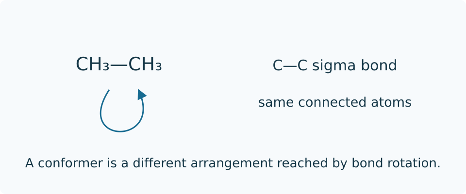
Name the operation before the result
Rotation about a C–C sigma bond changes relative positions while retaining connected neighbours.
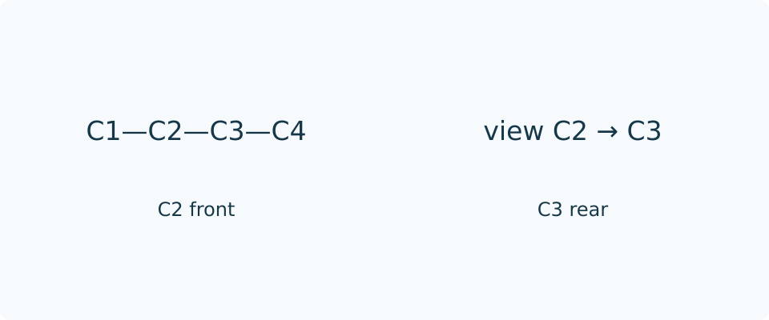
Choose a bond and viewing direction
Number butane C1–C4. Look from C2 toward C3, so C2 is front and C3 rear.
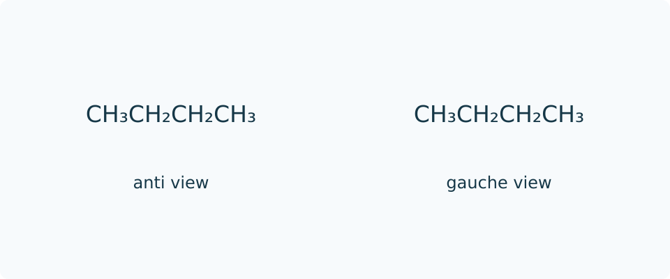
Compare two drawings of the same connectivity
Anti and gauche butane have identical condensed connectivity even though the spatial arrangements differ.
Consider rings, steric barriers and partial double-bond character before answering.
Single bonds can have torsional barriers; rings constrain motion and conjugation can restrict rotation. “Single” is not “barrier-free”.
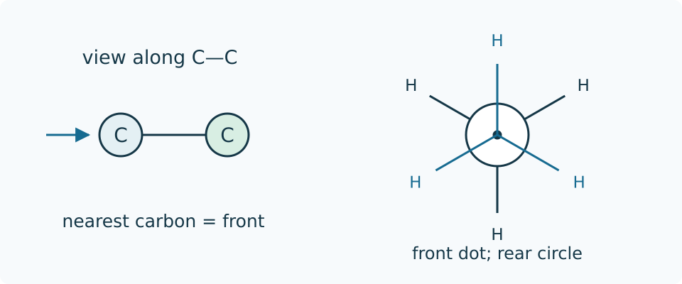
Read a Newman projection from the eye outward
The central dot is front carbon; the circle denotes the rear carbon.
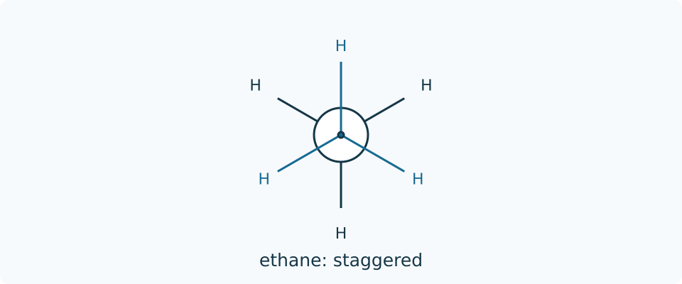
Inspect one staggered ethane view
Three front bonds and three rear bonds are offset by 60°. Count the H groups on both carbons.
Inspect the eclipsed view
Aligned projected bonds give a 0° offset. The H labels belong to different carbon atoms.
If you look C3 toward C2 rather than C2 toward C3, which carbon becomes front?
C3 is now nearest the viewer. Redraw the complete spatial arrangement rather than copying only the page orientation.
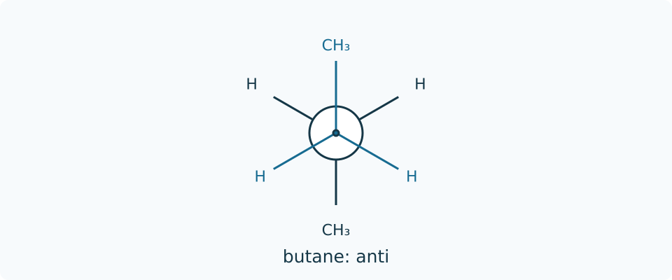
Place butane methyl groups opposite
For anti-butane, front CH₃ at twelve and rear CH₃ at six gives a 180° methyl dihedral.
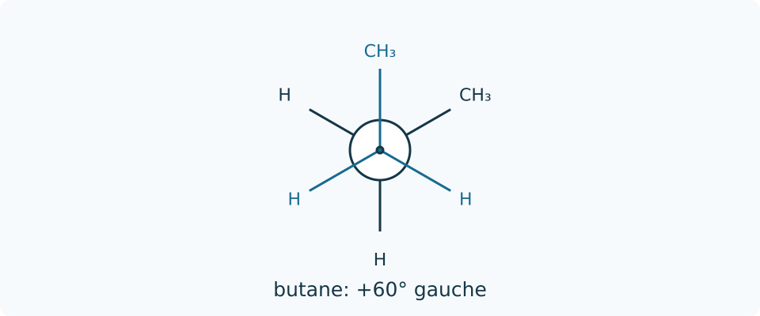
Place a methyl group at +60°
The gauche view remains staggered. The two larger substituents are closer than in anti.
Use the methyl positions, not only the absence of eclipsed bonds.
Anti and both gauche arrangements are staggered minima, but their methyl-group dihedrals and relative energies differ.
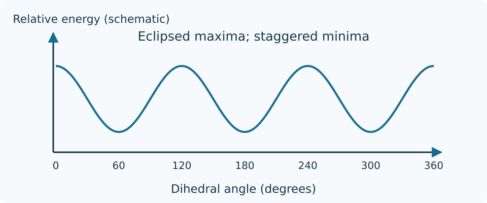
Count equivalent ethane minima
A complete turn visits three equivalent staggered arrangements because all three substituents on each carbon are H.
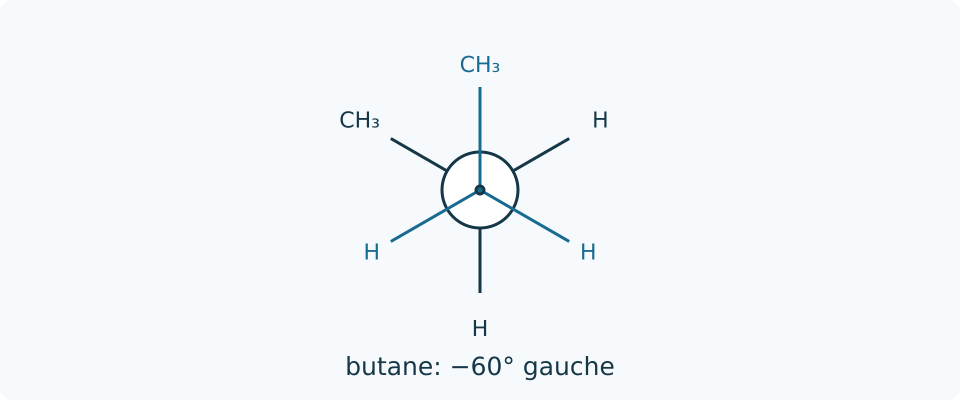
Find the second gauche arrangement
A −60° methyl dihedral gives the other gauche view of butane.
Read maxima as barriers along the path
Eclipsed arrangements lie higher than neighbouring staggered ones in the qualitative profile.
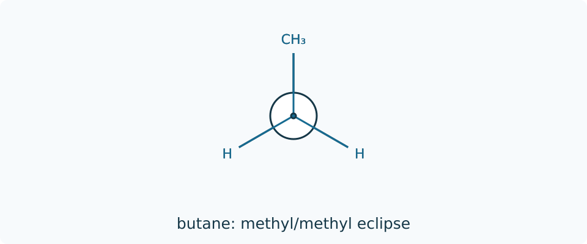
Eclipse the methyl groups directly
Methyl/methyl eclipsing is especially unfavourable in the butane comparison.
No energy values, temperature or free-energy conventions are supplied on this illustrative profile.
The curve supports relative-energy reasoning only. Numerical populations require suitable free-energy differences and temperature.
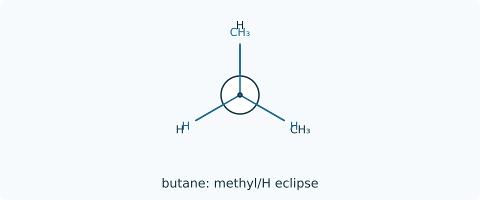
Inspect a methyl/H eclipse
An eclipsed view need not put the two methyl groups directly on top of one another.
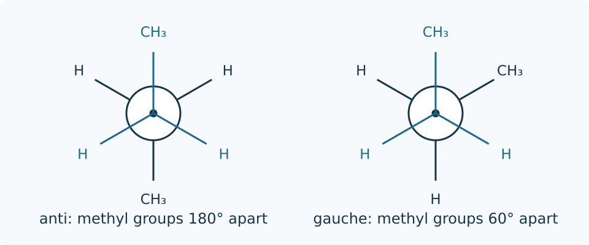
Explain why anti is favoured here
For ordinary butane, separating the methyl groups in the anti arrangement lowers energy relative to gauche.
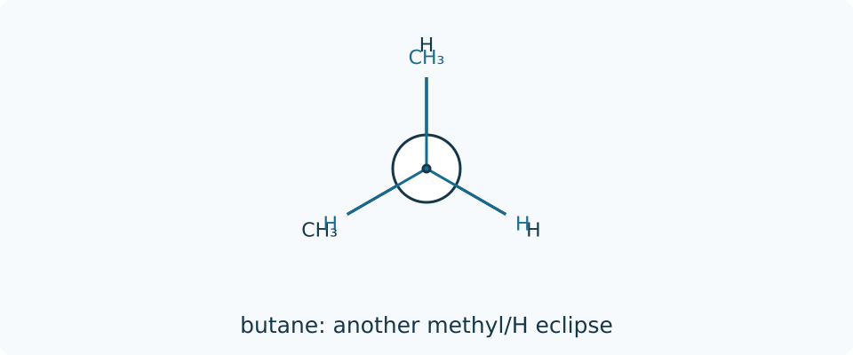
Follow the next eclipsed view
Rotation passes another methyl/H eclipse before reaching a different staggered minimum.
Count the +60° and −60° arrangements separately, while recognising their equal energy in an achiral environment.
Do not silently treat their multiplicity as one if constructing a physical statistical model. Our supplied two-state ΔG values already account for degeneracy.
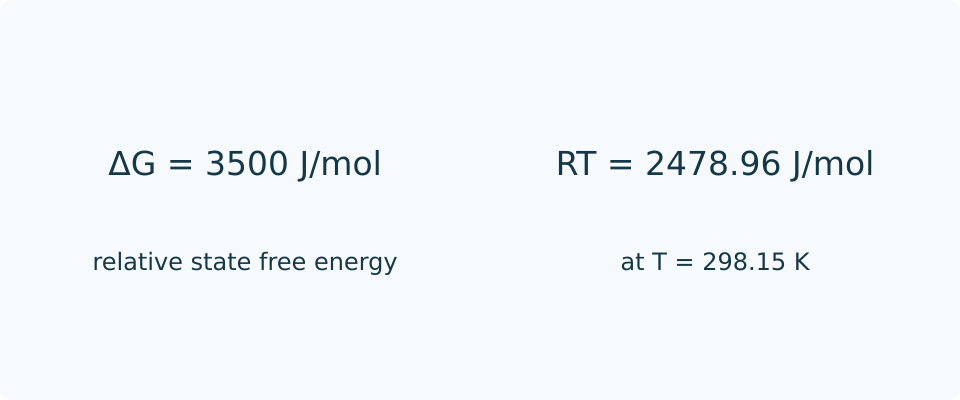
Check units before exponentiating
ΔG and RT must both use J/mol here. At 298.15 K, RT is about 2479 J/mol.
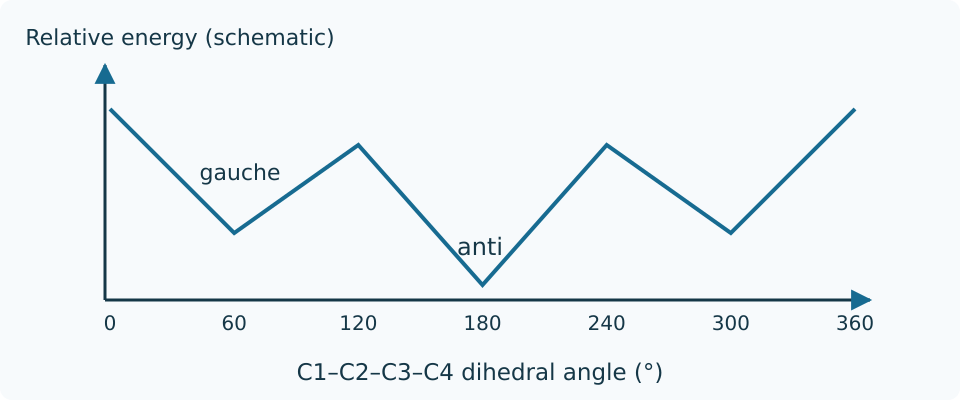
Separate a conformer energy from a barrier
A state free-energy difference predicts an equilibrium preference; a barrier concerns how fast interconversion occurs.
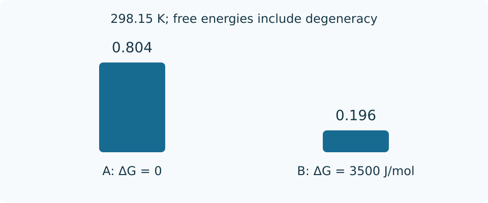
Inspect a supplied two-state prediction
With ΔG(A)=0 and ΔG(B)=3500 J/mol, the fractions are about 0.804 and 0.196.
Using exp(−ΔG/RT), what is the statistical weight of a state whose relative free energy is zero?
exp(0)=1. The other weight is about 0.244; divide each weight by their sum to obtain fractions.
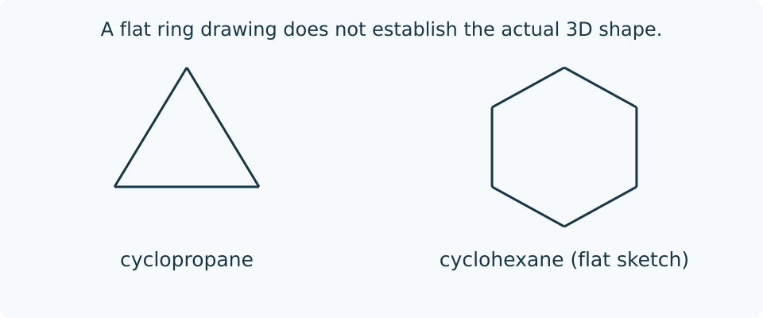
A planar ring sketch does not fix geometry
A hexagon on paper normally shows connectivity, not a claim that cyclohexane is flat.
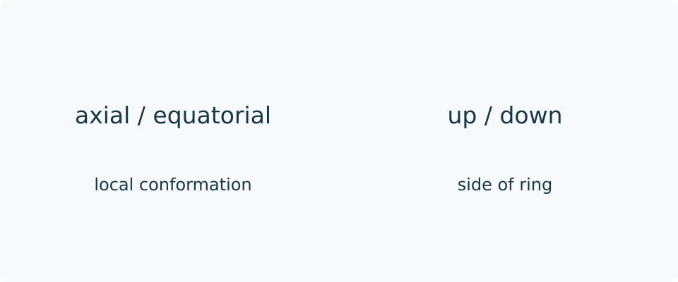
Separate two naming systems
Axial/equatorial identifies local bond direction in a chair; up/down identifies which side of the ring a substituent occupies.
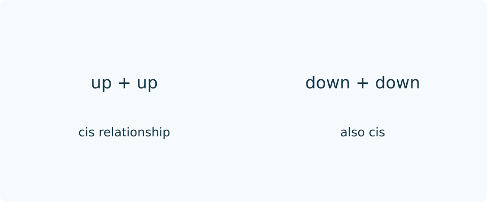
Recognise a cis relation
Up/up and down/down substituent pairs are cis even when one substituent is axial and the other equatorial.
Locate both up-equatorial and down-equatorial positions on a chair model.
Each chair contains axial-up, axial-down, equatorial-up and equatorial-down positions around the ring.
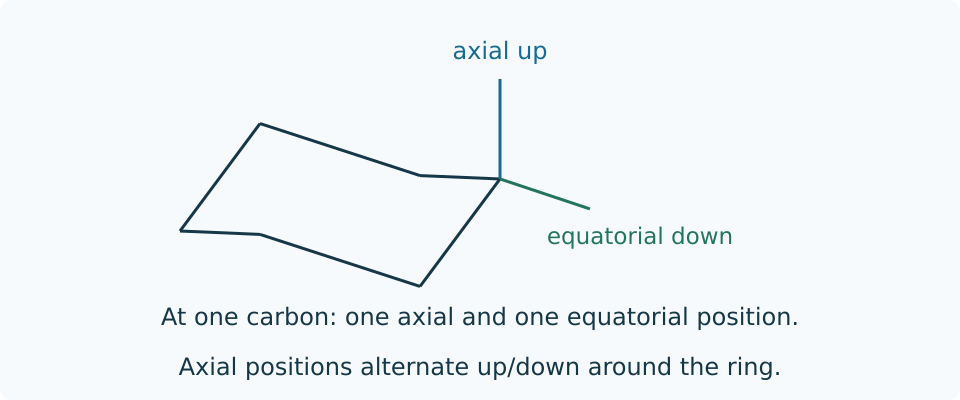
Find both positions at one ring carbon
The diagram displays one axial and one equatorial direction; the full ring alternates their up/down pattern.
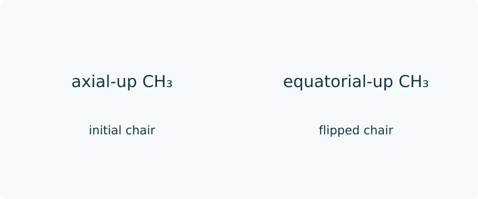
Follow an axial-up substituent
After a ring flip it is equatorial-up. The label “up” is retained.
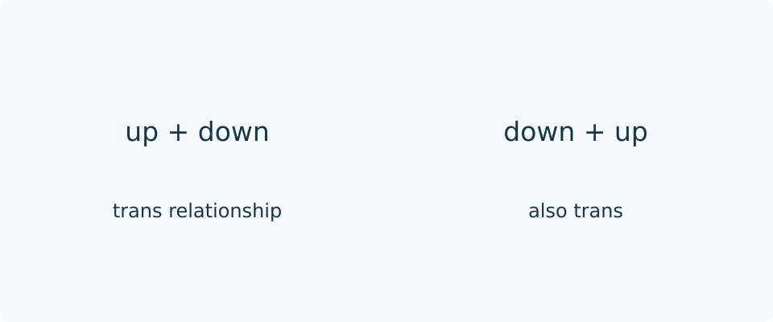
Recognise a trans relation
Up/down means trans. A chair flip preserves that relation while changing axial/equatorial occupancy.
Can an ordinary ring flip change which side of the ring a substituent occupies?
A ring flip changes conformation, not the up/down relation. A cis pair remains cis.
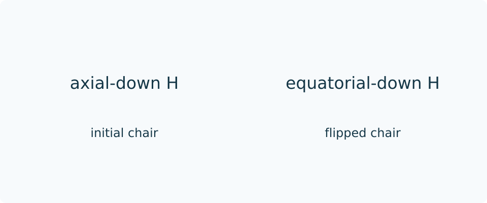
Repeat the rule for a down group
Axial-down becomes equatorial-down. Following one up example is not the whole rule.
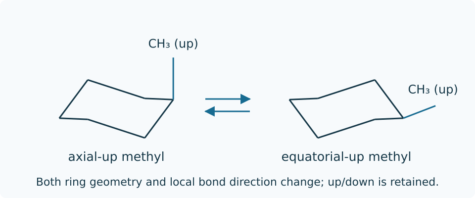
Explain a preference without claiming exclusivity
Methylcyclohexane generally favours equatorial methyl because it avoids unfavourable 1,3-diaxial interactions.
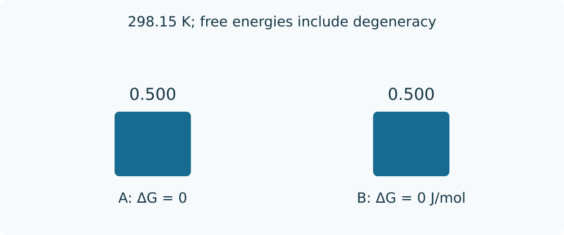
Test a zero free-energy difference
In the supplied two-state model, equal free energies produce equal weights and 0.5/0.5 fractions.
Would a finite positive free-energy difference make its equilibrium fraction exactly zero?
A finite difference gives a positive Boltzmann weight. Very small populations may be hard to observe but are not mathematically zero.
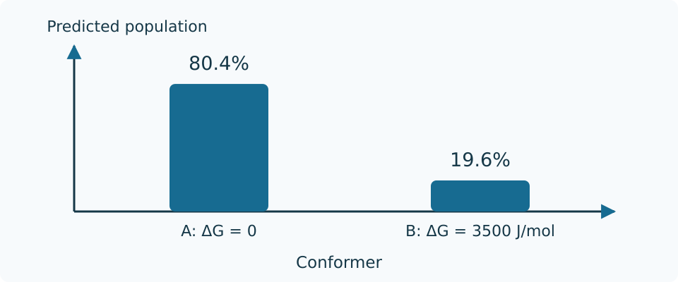
Normalise weights before calling them fractions
The relative weight is not yet a population fraction. Sum the weights and divide.
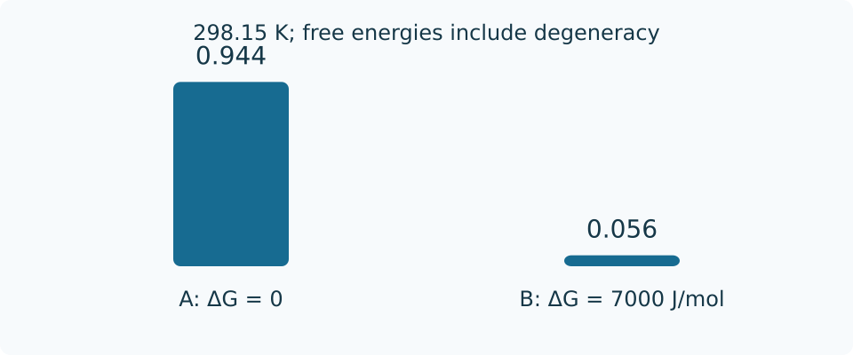
Increase the free-energy gap
With ΔG(B)=7000 J/mol at the same temperature, A becomes more strongly favoured than in the 3500 J/mol example.
Interpret the plotted fractions chemically
A is more populated because its supplied free energy is lower. The calculation assumes the chosen states describe the equilibrium.
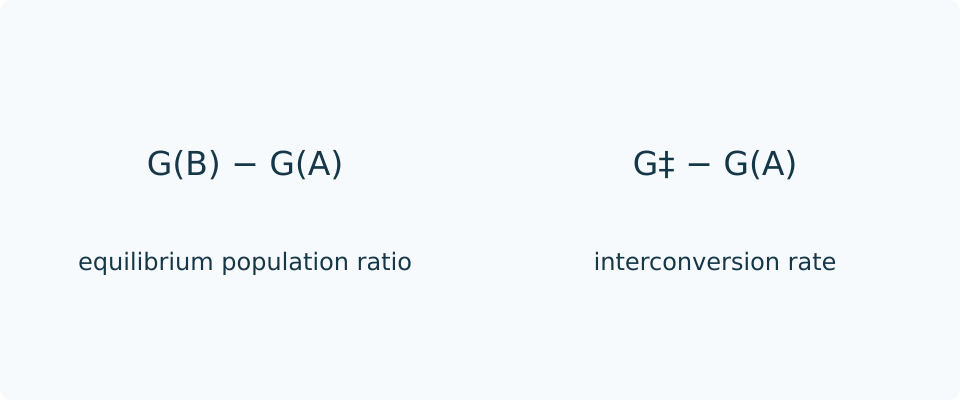
Separate the two energy questions
Changing the state difference changes equilibrium. Changing only a barrier can change rate without changing that equilibrium ratio.
Does a common energy offset change the normalised fractions? Explain before computing.
Both weights acquire the same multiplier. It cancels when dividing by their sum, leaving fractions unchanged.
Explain both the butane anti/gauche preference and the limits of predicting rate from an equilibrium population.
Use the standalone practice and worked checks, then the self-check. Required core problems and optional transfer work are labelled separately.
Write one chemical claim, the feature that supports it and one limit of the inference.
The reading guide provides optional textbook support; no textbook is needed to attempt the local practice.